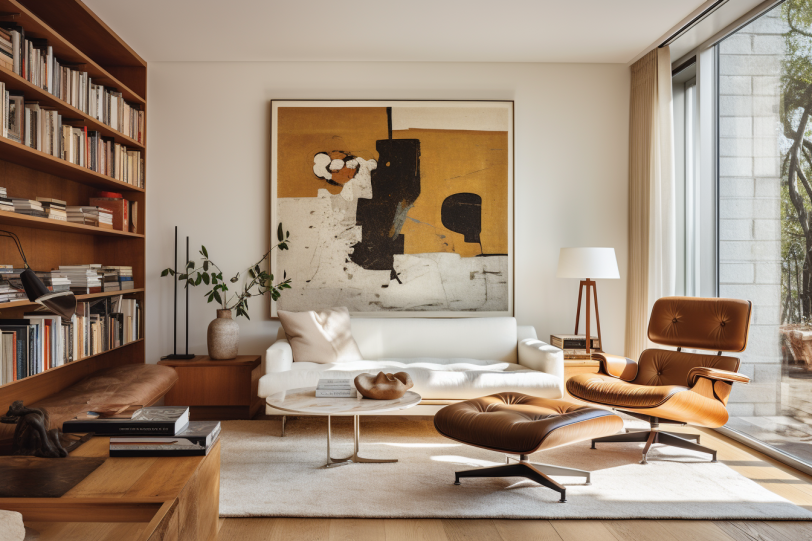
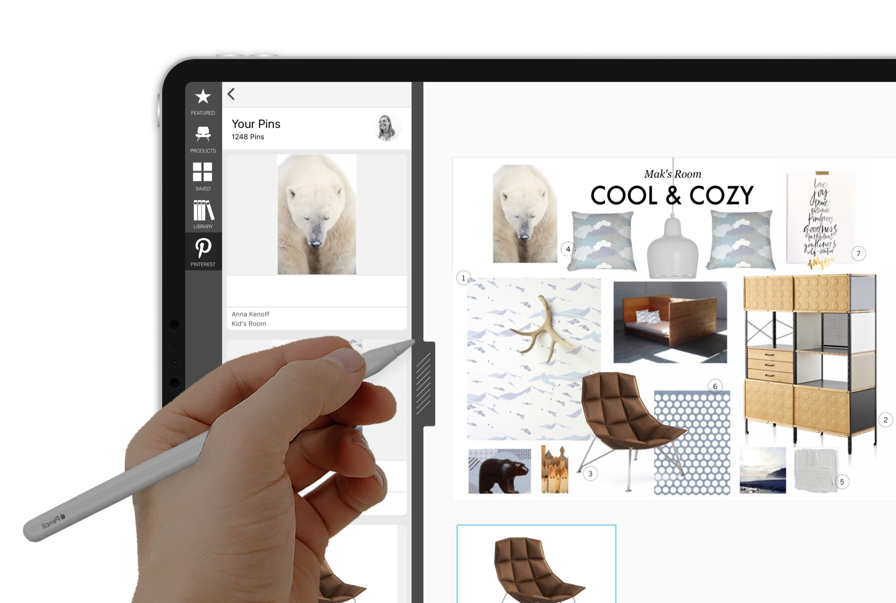
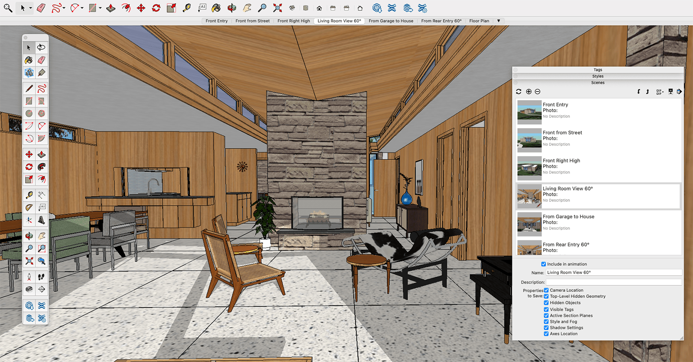
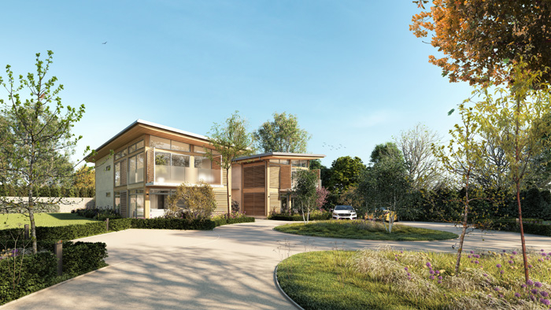

.png)
Design Ideas
Transforming Interior Design with AI: A Guide to Room Design and Rendering
Introduction
In recent years, artificial intelligence (AI) has made significant strides in revolutionizing various industries, and interior design is no exception. With AI-powered tools, designers can now streamline the process of creating and rendering rooms, offering innovative solutions and enhancing the overall design experience. In this article, we'll explore how AI is reshaping interior design and provide valuable resources for incorporating these technologies into your creative workflow.
AI-Powered Design Tools
AI-driven design tools have emerged as game-changers in the field of interior design. Platforms like Autodesk's generative design tools and Morpholio's Board Pro leverage AI algorithms to analyze design parameters and generate creative solutions. These tools assist designers in exploring a myriad of design possibilities and finding optimal solutions faster than ever before.
- Autodesk Generative Design
- Morpholio Board Pro
Virtual Reality (VR) and Augmented Reality (AR)
AI integrates seamlessly with VR and AR technologies to offer immersive experiences in interior design. Applications like SketchUp and Adobe Aero allow designers to visualize their creations in three-dimensional spaces, providing clients with interactive walkthroughs. This fosters better communication and understanding between designers and clients, ultimately leading to more informed design decisions.
- SketchUp
- Adobe Aero
AI-Enhanced Rendering
Rendering plays a crucial role in presenting design concepts convincingly. AI-driven rendering tools, such as NVIDIA's AI-based denoising technology and Chaos Group's V-Ray, significantly accelerate the rendering process. These tools enhance image quality, reduce noise, and deliver stunning visualizations that bring designs to life.
- NVIDIA AI Denoising
- Chaos Group V-Ray
AI for Personalized Design Recommendations
AI algorithms analyze user preferences and behaviors to provide personalized design recommendations. Pinterest's AI-powered tools, for instance, learn from users' boards and suggest design elements, color schemes, and furniture based on individual tastes. This personalization enhances the creative process and ensures that designs resonate with the end-users.
- Pinterest's AI Tools
AI-Infused Furniture Design

AI is not limited to the conceptual phase; it also extends to the creation of bespoke furniture. Platforms like OpenAI's DALL-E use generative algorithms to produce unique furniture designs based on textual descriptions. This allows designers to explore innovative furniture concepts and customize pieces according to specific project requirements.
- OpenAI DALL-E
Conclusion:
As the fusion of AI and interior design continues to evolve, designers can leverage these tools to unlock new levels of creativity, efficiency, and personalization. Incorporating AI into the design process not only expedites workflows but also enhances the overall quality of the final product. By embracing these technologies, interior designers can stay at the forefront of innovation and deliver exceptional experiences to their clients.